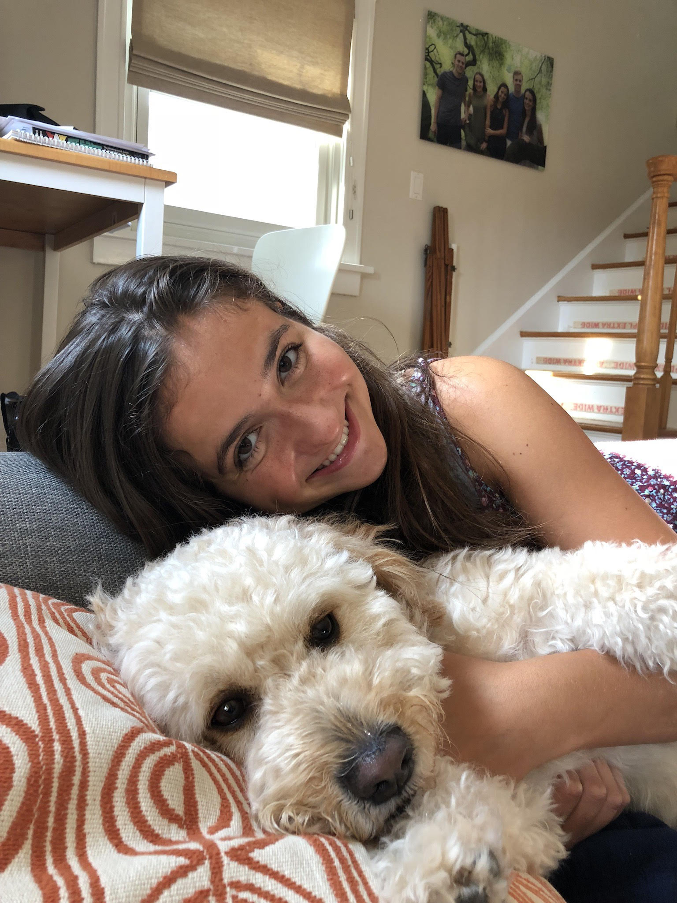

Our Stories
-Chidera Uwakwe
-Julia O'Neil
-Noila Ergasheva
-Trishika Nadarajah
My Interests:

My Interests:

My family and I came to the United States in April 2011 by winning the United States green card lottery. It was a big deal, especially since no one in my family had come to the U.S. and the probability of someone winning the lottery in my village was unlikely. At the age of 9, being in a totally different place in the world was mind blowing and insane to me which still applies now because I have such a love for exploring new things. In addition, it was definitely difficult at first to adapt to a different setting and environment but my family and I managed to adapt to the new changes. We have not begun the citizenship process because of the long process as well as the preparation and documentation that is required for it. It is a work in progress. But, if you are an immigrant who has a green card , you can apply for the U.S. Citizenship after you have lived in the United States as a lawful permanent resident for at least 5 years. You can do it! Till this day, I feel absolutely blessed to be where I am now with so many different resources provided for us all and to have such amazing people by my side. Such a blessing!
My Interests: I have a wide variety of interests that are all over the place but mostly everything catches my interest because I love learning/exploring new things. Life is too short to be doing nothing. In my free time, I love capturing pictures and videos of moments because of my love for photography as well as videography. In addition, I have such a passion for web development using HTML, CSS, and JavaScript because of the creative aspect of it which allows my inner ideas to come to reality and be free. Furthermore, I love to spread kindness because a simple act of kindness can have the power of just enlightening one’s day which can forever change their perspective on life and even allow them to return that act of kindness to others.
My immigration story may sound like everyone else’s, who have/had immigrated from their country of origin. My family and I moved to the States in 2011 when I was 9, from Sri Lanka. Before heading to New York, I have to admit, I was one of those kids who were oblivious to the world outside their homes. As a 9-year-old kid who couldn’t believe the world was bigger than it seemed, geographically, I was astonished by the way New York looked compared to my home town. Before I knew it, I had gotten used to the streets and places in Staten Island. When I look back now, it seems like I didn’t struggle at all to fit in with the new setting, even though seeing snow for the first time was exciting. But conforming to a very different place that is diverse in many ways is a slow process, despite not physically feeling it. My mom became the first citizen of U.S. in my family, following my siblings and I, and later on my dad. The process of getting our citizenship seemed difficult since my parents had hardly any free time off from work, yet by helping my parents fill up applications and photo-copy documents, the process seemed much less intimidating. Overall, if my family can do it, any immigrant family can too. We believe in you!
My Interests: They revolve around creativity. In my free time, I like to draw cute/kawaii things and I like to draw realism, but I am not the best at drawing. I usually get inspired by drawings and photos on Instagram, but I also use Pinterest. I do have a need to unnecessarily buy stationery supplies “because of the fun of it”. I really do need to stop...